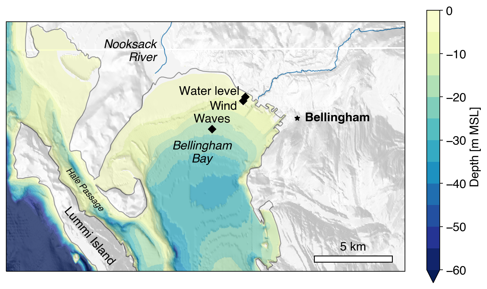

Provisional data subject to revision
This page shows water level, wave characteristics, wind speed and direction, and air temperature and pressure in Bellingham Bay, WA. These data are collected as part of the USGS Coastal Habitats in Puget Sound project. The map below shows the locations of the measurement sites. All times are in UTC.
